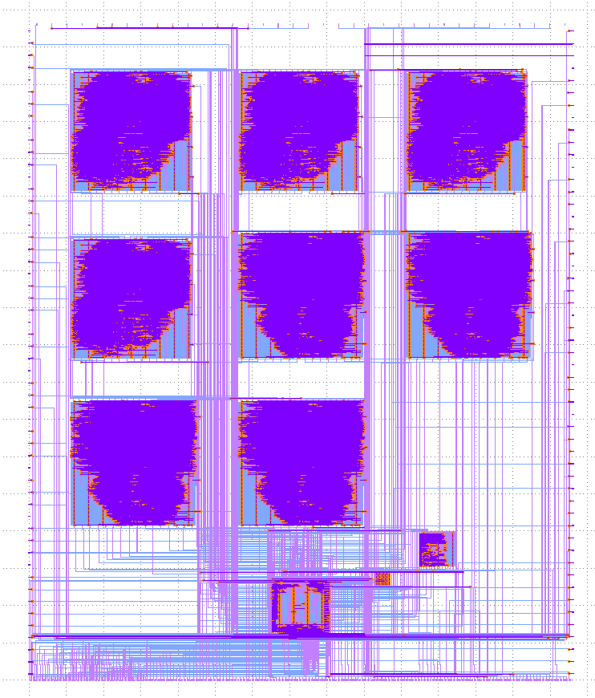

Avalon Semiconductors AS6581
Welcome to the home of the AS6581 SID replica, created using the Skywater Foundries 130nm PDK (Process Development Kit) for Efabless’ & Google’s MPW-9 Open Shuttle.
This projects aims to be different from existing SID preservation projects, such as ARMSid and FPGASid, by actually manufacturing an IC containing a functional replica of the C64 SID. Not only that, but the AS6581 actually contains not just one, not just two, but eight SIDs in one package. And on top of that, you will be able to choose between the sound of the 6581, or 8580. Four of the SIDs on the IC are built to sound like 6581s, with the remaining four sounding like 8580. The IC’s bus interface is compatible with that of the original SID, meaning that it (mounted to a proper adapter board) will be a drop-in replacement.
Of course, the IC is not 1:1 identical with the C64 SID, and some compromises had to be made, most significantly in respect to the audio filters. Although Skywater PDK does allow the creation of analog and mixed signal circuitry, it is not practical to do so currently, as it is heavily undocumented, and not many tools to lay out analog circuitry exist yet. As a result, no analog circuitry is present inside the AS6581, and the audio filters are implemented in digital logic. Audio output is also purely digital coming from the AS6581, however, an SPI interface to connect to external DAC chips is implemented, as well as a PWM output, with support for audio-specific interfaces such as PCM or I²S planned for future revisions of the chip. On the upside, these output methods also allow for high-quality recording of digital audio straight from the chip.
This documentation serves as a datasheet for the chip, documenting its behavior.
